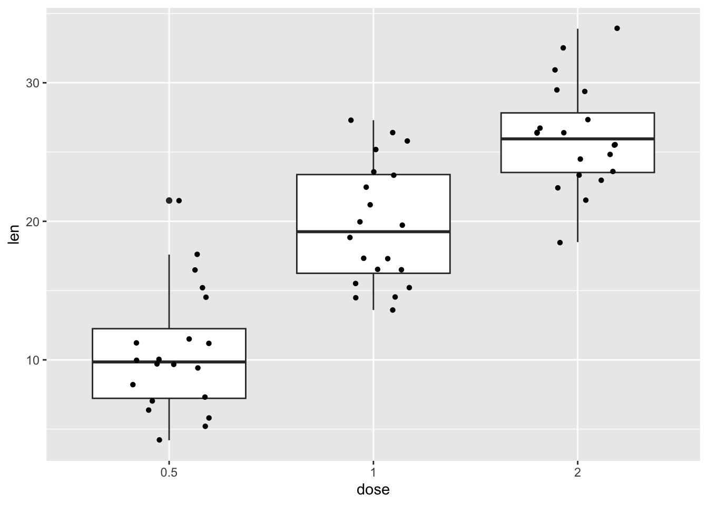
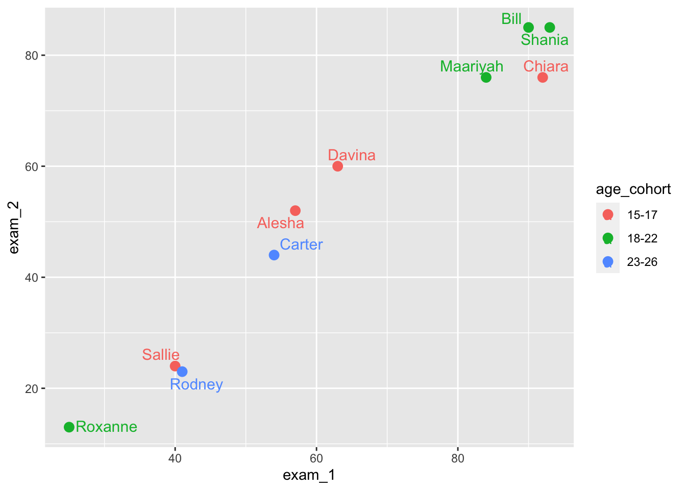

library(tidyverse)4. Data visualization
Three important things to remember:
As you complete the handout, please don’t just read the commands, please type every single one of them. This is really important: Learning to program is like practicing a conversation in a new language. You will improve gradually, but only if you practice.
If you’re stuck with something, please write down your questions (to share later in class) and try to solve the problem. Please ask your group members for support and, conversely, if another student is stuck, please try to help them out, too. This way, we develop a supportive learning environment that benefits everybody. In addition, get used to the Help pages in RStudio and start finding solutions online (discussion forums, online textbooks, etc.). This is really important, too. You will only really know how to do quantitative research and statistical analyses when you are doing your own research and dealing with your own data. At that point, you need to be sufficiently autonomous to solve problems, otherwise you will end up making very slow progress in your PhD.
Finally, if you do not complete the handout in class, please complete the handout at home. This is important as we will assume that you know the material covered in this handout. And again, the more you practice the better, so completing these handouts at home is important.
References for this handout
Many of the examples and data files from our class come from these excellent textbooks:
- Andrews, M. (2021). Doing data science in R. Sage.
- Crawley, M. J. (2013). The R book. Wiley.
- Fogarty, B. J. (2019). Quantitative social science data with R. Sage.
- Winter, B. (2019). Statistics for linguists. An introduction using R. Routledge.
This week’s worksheet is long! That’s because there are a lot of plots for you to look at and make sure the ones you create also match up.
Step 0: Preparing your Environment
Firt things first, open up a new R script and load in the Tidyverse library
Need a reminder?
In addition, please download the following data files from Moodle and place them in your working directory.
- language_exams_shorter.csv
- nettle_1999_climate.csv
- titanic.csv
- carprice.csv
You will also notice when completing the handout, we will also use a “built-in” dataset. These are datasets that come with R (or are loaded with different packages). They are a nice way to illustrate some of the features of R.
To see the list of pre-loaded data, execute the function data(). This will display the available datasets in the script editor.
data()The data is already installed, you don’t need to load it with the data() function. You can just use the built-in datasets in your commands. Often, these datasets come with packages and are used to demonstrate examples in these packages.
Step 1: Two plotting systems in R: Base R and ggplot
There are fundamentally two methods for plotting in R, one that we touched on last week which was base R, and the other is via a library that comes bundled in the tidyverse called ggplot2. ggplot is currently the most widely used plotting system in R, and it can do lots of really cool things.
Base R is called as such because it only uses functions that come with R in its most basic form. These are plots we can create without any additional packages required. You may come across examples of base plots in online resources such as StackOverflow when you go looking for help, so it is worthwhile understanding how they are created. Ultimately, you will be creating almost all your plots and graphics using ggplot, so I won’t spend much time on base R.
Step 2: Base R
First, load in the data for this task and have a quick look at it
language_exams <- read_csv("language_exams_shorter.csv")Rows: 10 Columns: 7
── Column specification ────────────────────────────────────────────────────────
Delimiter: ","
chr (2): age_cohort, student
dbl (5): exam_1, exam_2, exam_3, level, age
ℹ Use `spec()` to retrieve the full column specification for this data.
ℹ Specify the column types or set `show_col_types = FALSE` to quiet this message.head(language_exams)# A tibble: 6 × 7
age_cohort exam_1 exam_2 exam_3 level student age
<chr> <dbl> <dbl> <dbl> <dbl> <chr> <dbl>
1 15-17 57 52 59 1 Alesha 16
2 15-17 92 76 81 1 Chiara 15
3 15-17 63 60 66 1 Davina 17
4 15-17 40 24 30 1 Sallie 16
5 18-22 25 13 19 1 Roxanne 18
6 18-22 84 76 82 1 Maariyah 21Next, we want to get the mean scores of the variables exam_1, exam_2, and exam_3. We can do this using the summarise() function that comes from dplyr (part of Tidyverse). Take a look at what the help tab has to say about this function by typing ?summarise, or by going to the Help tab in the top-right, and using the search bar to look for summarise.
It tells us that “summarise() creates a new data frame. It returns one row for each combination of grouping variables; if there are no grouping variables, the output will have a single row summarising all observations in the input. It will contain one column for each grouping variable and one column for each of the summary statistics that you have specified.”
If we then scroll to the bottom of the help pane, we get to the examples - have a look at the very first one, which I paste below. Make sure you know where the examples are, they are invaluable for understanding how new code works.
Note: mtcars is one of these preloaded datasets I just mentioned, and see how it lets you run example code very easily.
mtcars %>%
summarise(mean = mean(disp), n = n()) mean n
1 230.7219 32So we can run example code, and it gives us an output. How do we go about understanding what it has just done? In this section of code, we have four components, and only one of which we have seen before. Let me break it down for you:
mtcars- a prepackaged dataset, and was extracted from the 1974 Motor Trend US magazine, and comprises fuel consumption and 10 aspects of automobile design and performance for 32 automobiles (1973–74 models). So it’s just a small “toy” datatset we can test ideas on.summarise()- a new function that creates summary tables from larger datasetsmean = mean(disp)- we have usedmean()before. Here, we are tellingsummarise()to get the mean of the variable disp, and show it in a column called mean.n = n()- this is asking for the Number of observations (rows) in the dataset. n for number.
Can you use this new knowledge to construct a summary table that will give you an output of the mean of exam_1, exam_2, and exam_3?
answer
mean_scores <- language_exams |>
summarise(mean_1 = mean(exam_1),
mean_2 = mean(exam_2),
mean_3 = mean(exam_3))
mean_scores# A tibble: 1 × 3
mean_1 mean_2 mean_3
<dbl> <dbl> <dbl>
1 63.9 53.8 60.9Notice how after each comma I start a new line, this is for ease of reading, and R knows to look at the next line if it seems a comma at the end of a line.
Okay, so we have our summary table made from summarise() but it isn’t quite in the right format to use in plots, so let’s coerce the mean_scores object to a numeric vector:
class(mean_scores) # to show it's a tibble[1] "tbl_df" "tbl" "data.frame"mean_scores <- mean_scores |>
as.numeric() #quite literally, telling R to read it as numbers and not a tibble.
class(mean_scores) #now it's numeric![1] "numeric"Barplots
Now let’s use it in a barplot
barplot(mean_scores)You should now see the bar chart in the Plot tab of the Files, Plots, etc. pane, bottom right.
By default, the plot is vertical, but we can change this.
Compare the following output to the output produced by the previous command.
barplot(mean_scores, horiz = TRUE) This is all very good, but we need to add names to our columns, of course. We can do this by adding the names.arg() argument as below.
barplot(mean_scores, names.arg = c("Exam 1", "Exam 2", "Exam 3"))We can go on and add titles and axis labels like so. Or change colours and make it look fancy, but really Base plots should be used for very fast, basic plots for you to check things quick. We will cover these ideas properly in the ggplot section
barplot(
mean_scores,
names.arg = c("1", "2", "3"),
# Note: We change the column names to avoid duplication
main = "Performance on the exams", # title
xlab = "Exams", #x axis
ylab = "Scores" #y axis
)barplot(mean_scores, col = "turquoise", border = "steelblue")barplot(
mean_scores,
col = "turquoise",
border = "steelblue",
names.arg = c("1", "2", "3"),
# Note: We change the column names to avoid duplication
main = "Performance on the exams",
xlab = "Exams",
ylab = "Scores"
)Histograms
Let’s quickly look at histograms in Base R. We start by creating two new objects, exam_1 and ages, both extracted from our language_exams data.
exam_1 <- language_exams$exam_1
ages <- language_exams$ageA histogram can be created using the hist() function. This plots the frequency of the variable ages in the our language exams dataset. You can play with colours if you want here, it’s the same as with barplot
hist(ages)We can change the number of breaks, i.e. the breakpoints between histogram cells. This is useful as sometimes the default breakpoint obscures the data.
hist(ages, breaks = 20)Lineplots
To illustrate line plots in Base R, let’s start by generating some data and creating three variables. We will create our own tibble from ideas we used in previous weeks. I’m leaving this code intentionally uncommented and a bit barebones - I would like for you to really read the code, use the help pane to understand what it is you are doing, test different components, etc.
Don’t just run the code and assume it works - like I’ve said before, if you do that, you’ll get really good at running Matthew’s code, but not your own.
test_data <- tibble(var_1 = c(1:20),
var_2 = var_1^2,
var_3 = 4 * var_2)To test your understanding, can you mutate() the test_data tibble and add a new column called var_4 which is var_1 divided by var_3? Make sure to assign it as test_data still!
answer
test_data <- test_data |>
mutate(var_4 = var_1 / var_3)
test_data# A tibble: 20 × 4
var_1 var_2 var_3 var_4
<int> <dbl> <dbl> <dbl>
1 1 1 4 0.25
2 2 4 16 0.125
3 3 9 36 0.0833
4 4 16 64 0.0625
5 5 25 100 0.05
6 6 36 144 0.0417
7 7 49 196 0.0357
8 8 64 256 0.0312
9 9 81 324 0.0278
10 10 100 400 0.025
11 11 121 484 0.0227
12 12 144 576 0.0208
13 13 169 676 0.0192
14 14 196 784 0.0179
15 15 225 900 0.0167
16 16 256 1024 0.0156
17 17 289 1156 0.0147
18 18 324 1296 0.0139
19 19 361 1444 0.0132
20 20 400 1600 0.0125We can use the plot() function to display variables 1 and 2.
plot(test_data$var_1, test_data$var_2)
There are many types of line. Try out changing the line types by modifying the value for the type argument.
plot(test_data$var_1, test_data$var_2, type = "p") # pointsplot(test_data$var_1, test_data$var_2, type = "b") # both points and linesplot(test_data$var_1, test_data$var_2, type = "o") # overplots points and linesplot(test_data$var_1, test_data$var_2, type = "l") # linesplot(test_data$var_1, test_data$var_2, type = "n") # no points or linesoften we need to display more than one line. This is how it works in Base R
First, we plot one line. (We’re also adding color and labels.)
plot(
test_data$var_1,
test_data$var_2,
type = "b",
frame = FALSE,
pch = 20,
col = "turquoise",
xlab = "Age",
ylab = "Scores"
)
#Now, we can add a second line on top.
lines(test_data$var_1,
test_data$var_2,
pch = 20,
col = "darkblue",
type = "b")
# Let's add a legend to the plot to make it clear what the lines refer to.
# Of course there are more compexities to base plots and how they look, but again, ggplot is where we are going to be heading.
legend(
"topleft",
legend = c("Group A", "Group B"),
col = c("turquoise", "darkblue"),
lty = 1:2,
cex = 0.8
)
Okay, enough of base R plotting. We’ve seen how it works with three basic types of plot. We could go further and do scattergraphs with plot() and we just don’t try and add in line types, or we could do boxplots with boxplot() but I would rather show you these ideas and to revisit the other plots using ggplot. Why? It is far more powerful, lends itself to the tidy process and just generally is better. Once you start making them, I wouldn’t be surprised if you start seeing ggplot-made graphs in publications you read, I know I see them all the time!
Step 3: ggplot
ggplot is a powerful system for producing elegant graphics. ggplot is included in the tidyverse package, so if you have loaded the latter you’re good to go. Alternatively, you can load the ggplot2 package directly as follows.
To learn more about the ggplot, I recommend the textbooks above, but also the following websites.
An excellent reference for ggplot: https://ggplot2.tidyverse.org/index.html
A useful cheat sheet: https://github.com/rstudio/cheatsheets/blob/main/data-visualization.pdf
Gorgeous graphs in ggplot: https://r-graph-gallery.com/ggplot2-package.html
The gg in ggplot means grammar of graphics (Wickham, 2010). This is a system for mapping variables in a dataset to properties of a plot (e.g., shape, size, color position).
We will focus on using ggplot() to produce our visualizations.
Every time we use the ggplot command we need to specify three things (at least).
The dataset containing all the data. This can be a tibble, data frame, vector, etc.
The set of aesthetic mappings (aes). These describe how variables in the dataset are mapped to visual properties (aesthetics) of the type of graph we want to produce (geometric objects). Aesthetics is used to indicate x and y variables, to control the color, the size or the shape of points, the height of bars, and so forth.
The set of layers that render the aesthetic mappings. This is usually done according to prespecified geometric objects (geoms) such as lines, points, bars. The geometry defines the type of graphics we wish to plot (histogram, bar chart, boxplot, etc.)
In other words, we need to tell R what data to use for the plot, the type of graph, and the mapping between the visual cue and the variable (position, color, fill, etc.)
To understand how this work in practice, let’s start with a simple example.
The first argument accepted is the data, and then we provide the mapping and tell what we want the x and y axes to be.
ggplot(language_exams,
mapping = aes(x = exam_1, y = exam_2))But wait, what do you see in the Plot tab? A blank canvas, right? This is because we did not specify the type of geometric object (geom). We need to add an additional line to specify the type of plot that we want
Scatter plot
ggplot(language_exams,
mapping = aes(x = exam_1, y = exam_2)) +
geom_point() # for a scatter plot
As you can see in your output, you should now see a scatterplot with the data from exam_1 and exam_2.
Line plot
If you prefer a different type of plot, just change the geom. Below, we now produce a line plot.
ggplot(language_exams,
mapping = aes(x = exam_1, y = exam_2)) +
geom_line() # for a line plotThe funadamental difference between base and ggplot in terms of code layout, is that base in just “drawing thing” whereas ggplot attempts to make a coherent package where you are writing a little section of code that layers different components to create complex plots. Ggplot relies on an underlying dataframe, and encourages you to have your data in the correct format (nice and tidy) before plotting, whereas base R can be bodged quite a bit resulting in really messy sections of code.
The sequential nature of layering a ggplot figure is quite simplistic and I find easier to alter and manage. For further plots, let us pipe in the data frame to ggplot for improved readability.
We can also specify, in the mapping aes, what shape the different points in the scatterplot should have. For example, we can use a third variable (non-numeric) as a shape or as a color.
language_exams |>
ggplot(mapping = aes(x = exam_1, y = exam_2, shape = age_cohort)) +
geom_point()and
language_exams |>
ggplot(mapping = aes(x = exam_1, y = exam_2, color = age_cohort)) +
geom_point()
One more thing. We actually don’t need to write mapping, nor do we need to spell out x and y. By default, ggplot will assume that the first function after you specify the dataset (language_exams) is the mapping (aes), and that the first two arguments with the aes() are the x-axis and y-axis respectively.
Compare the following and see that they are functionally equivalent:
language_exams |>
ggplot(mapping = aes(x = exam_1, y = exam_2)) + geom_point() #explicit
language_exams |>
ggplot(aes(exam_1, exam_2)) + geom_point() #condensed
We will use the condensed version of writing, because why wouldn’t we?
Step 4: Histograms and frequency polygons with ggplot
Let’s do some plotting with ggplot. We begin with histograms.
We first load the data from the Nettle (1999) book about language diversity and create a new object called languages.
languages <- read_csv("nettle_1999_climate.csv")Rows: 74 Columns: 5
── Column specification ────────────────────────────────────────────────────────
Delimiter: ","
chr (1): Country
dbl (4): Population, Area, MGS, Langs
ℹ Use `spec()` to retrieve the full column specification for this data.
ℹ Specify the column types or set `show_col_types = FALSE` to quiet this message.Histograms are plotted if we use geom_histogram() in the ggplot() command.
languages |>
ggplot(mapping = aes(x = Langs)) +
geom_histogram()`stat_bin()` using `bins = 30`. Pick better value with `binwidth`.
Notice that we only supply an x axis for a histogram, because it does the y-axis automatically based on count data.
Themes
Let’s pause for a second to consider themes(). In ggplot, we can make many, many, many, many detailed changes to our graphs, which we cannot cover here. Check out the graph gallery here. https://r-graph-gallery.com/ggplot2-package.html
But we can also make bigger changes easily by adding themes() to our ggplot() commands.
Let’s compare the following four types of themes. (There are many other themes.)
languages |>
ggplot(mapping = aes(x = Langs)) +
geom_histogram() # No theme`stat_bin()` using `bins = 30`. Pick better value with `binwidth`.languages |>
ggplot(mapping = aes(x = Langs)) +
geom_histogram() +
theme_gray() # Same as before, the default`stat_bin()` using `bins = 30`. Pick better value with `binwidth`.
languages |>
ggplot(mapping = aes(x = Langs)) +
geom_histogram() +
theme_minimal() # Theme minimal`stat_bin()` using `bins = 30`. Pick better value with `binwidth`.languages |>
ggplot(mapping = aes(x = Langs)) +
geom_histogram() +
theme_classic() # Theme classic`stat_bin()` using `bins = 30`. Pick better value with `binwidth`.Back to histograms
We can also format the different elements of the histogram. Below, we change the widths of the bins and later add some color, too. Again, compare what the commands do.
languages |>
ggplot(aes(Langs)) +
geom_histogram()`stat_bin()` using `bins = 30`. Pick better value with `binwidth`.
languages |>
ggplot(aes(Langs)) +
geom_histogram(binwidth = 50)languages |>
ggplot(aes(Langs)) +
geom_histogram(binwidth = 50,
color = 'turquoise4',
fill = 'paleturquoise')Sometimes you might prefer using a frequency polygon to display data rather than a histogram. For this, just use the geom_freqpoly() command.
Compare. First, a histogram. (You can see the plot above.)
languages |>
ggplot(aes(Langs)) + geom_histogram(binwidth = 50,
color = 'turquoise4',
fill = 'paleturquoise') 
Then, a frequency polygon.
languages |>
ggplot(aes(Langs)) + geom_freqpoly(binwidth = 50,
color = 'turquoise4',
fill = 'paleturquoise') Warning in geom_freqpoly(binwidth = 50, color = "turquoise4", fill =
"paleturquoise"): Ignoring unknown parameters: `fill`Bar charts
Let’s try out bar charts now. Again, we load data first. This comes from the Andrews (2021) textbook. Make sure to load it in, and have a look at the data to get an idea for it.
titanic <- read_csv("titanic.csv")Rows: 1309 Columns: 5
── Column specification ────────────────────────────────────────────────────────
Delimiter: ","
chr (4): name, survived, sex, passengerClass
dbl (1): age
ℹ Use `spec()` to retrieve the full column specification for this data.
ℹ Specify the column types or set `show_col_types = FALSE` to quiet this message.- How many columns?
- How many rows?
- What kind of data is in the object?
To do bar charts, we use geom_bar().
Compare what the different commands do.
titanic |>
ggplot(aes(passengerClass)) +
geom_bar()titanic |>
ggplot(aes(passengerClass, fill = survived)) +
geom_bar()titanic |>
ggplot(aes(passengerClass, fill = survived)) +
geom_bar(position = "dodge")As you can see, we can use nominal categories as fill in aesthetic mapping (fill = survived), and we can manipulate the position of the bars (position = “dodge”).
Let’s more data before we illustrate further. This dataset is also from Andrew (2021), it displays information about cars (lots of them).
car_prices <- read_csv("carprice.csv") New names:
Rows: 48 Columns: 10
── Column specification
──────────────────────────────────────────────────────── Delimiter: "," chr
(1): Type dbl (9): ...1, Min.Price, Price, Max.Price, Range.Price, RoughRange,
gpm100,...
ℹ Use `spec()` to retrieve the full column specification for this data. ℹ
Specify the column types or set `show_col_types = FALSE` to quiet this message.
• `` -> `...1`The following command creates a bar chart visualizing the prices (y-axis) according to type of car (x-axis).
car_prices |>
ggplot(aes(Type, Price)) +
geom_bar(stat = "identity")We can also group the data to further explore. The command below creates a new object called cars_prices_grouped, loads the car price data, groups it by car type, and calculates the mean prices for each car type.
We’ve seen something as complex as the below before, but take a look and make sure you know what’s happening, on the LHS and RHS of each pipe.
cars_prices_grouped <- car_prices %>%
group_by(Type) %>%
summarise(Price = mean(Price))If you now type the name of the new object cars_prices_grouped, you will get a tibble with the average price.
cars_prices_grouped # Compare to car_prices above# A tibble: 6 × 2
Type Price
<chr> <dbl>
1 Compact 12.8
2 Large 24.3
3 Midsize 21.8
4 Small 10.0
5 Sporty 19.4
6 Van 18.3We can now do another bar chart with the grouped data.
cars_prices_grouped |>
ggplot(aes(Type, Price)) +
geom_bar(stat = "identity")
We can even combine the grouping process into the plotting too, bear with me on this next chunk of code, it’ll be the longest pipeline we’ve done so far
car_prices |>
group_by(Type) |>
summarise(Price = mean(Price)) |>
ggplot(aes(Type, Price)) +
geom_bar(stat = "identity")Three pipes and a plot, that’s a lot. But break it down, compare it against the previous lines of code we have seen, and can you understand exactly how we went from the dataset car_prices through to a barplot? Could you take the above code and split it out into the two separate actions again?
Why might we want to pipe all these different commands together? What benefit does it give us?
Boxplots
For the boxplots, we will use the built-in dataset ToothGrowth.
First, let’s convert the variable dose from a numeric to a factor variable. These are categorical variables that can be either numeric or string variables and that can be used more easily in different types of graphics. We can do this in one of two ways, there is the base option which is the first line but commented out (as it is only to show you), and the tidy version.
#ToothGrowth$dose <- as.factor(ToothGrowth$dose) ## just as an example
ToothGrowth <- ToothGrowth |>
mutate(dose = as.factor(dose))In an ideal world, we want to keep our writing style either in base or in tidy, I will teach you tidy because it means you can pipe things together and have really well-written, easily understandable code that can be run using one button press, rather than multiple. It helps to keep our code programmatic, logical, and easily understood where multiple functions are used to complete one meta-action.
In the above, the base version may seen to be more easily written, but when things get more complicated, then tidy is better. It is best to understand the priciples now, because it’ll be easier to carry out in your own analyses later on. I am not teaching you anything that I don’t personally do in my own coding. There is no pedagogically-motivated reason for me to teach Tidy over Base, beyond that the Tidy style is one of the most common ways of writing R code.
Let’s look at generating a boxplot
ToothGrowth |>
ggplot(aes(x = dose, y = len)) +
geom_boxplot()To make our life a bit easier, let’s assign the command above (which produces a plot) to a new object called our_boxplot. This command creates an object called our_boxplot, which consists of, well, a boxplot.
our_boxplot <- ggplot(ToothGrowth, aes(x = dose, y = len)) +
geom_boxplot()If you now run this command, you create the boxplot.
our_boxplot
To rotate a boxplot, just coord_flip()to your boxplot, as in the example below.
our_boxplot + coord_flip()
Notched box plots are also useful. The notch refers to the narrowing around the median. You can create a notched box plots as follows. Did you notice that there is an outlier? (See above the top whisker.) By default, outliers are in the color of the box. But we can change color, shape and size of the outlier.
Let’s try out different shapes. See how the different values for the outlier.shape argument affect the plot. What happens when you run the following commands?
ToothGrowth |>
ggplot(aes(x = dose, y = len)) +
geom_boxplot(
outlier.colour = "darkblue",
outlier.shape = 0, # square
outlier.size = 4)ToothGrowth |>
ggplot(aes(x = dose, y = len)) +
geom_boxplot(
outlier.colour = "darkblue",
outlier.shape = 1, # circle
outlier.size = 4)Try out some other numbers for outlier.shape, what do they produce?
The function stat_summary() can be used to add mean points to a box plot, as in the following command.
our_boxplot + stat_summary(
fun.y = mean,
geom = "point",
shape = 23,
size = 4
)Warning: The `fun.y` argument of `stat_summary()` is deprecated as of ggplot2 3.3.0.
ℹ Please use the `fun` argument instead.We can add points to a box plot by using the functions geom_dotplot() or geom_jitter().
In the following example, our box plot also has a dot plot.
our_boxplot +
geom_dotplot(binaxis = 'y',
stackdir = 'center',
dotsize = 0.5)Bin width defaults to 1/30 of the range of the data. Pick better value with
`binwidth`.And in this example, it has jittered points with 0.2 degree of jitter in x direction. The jitter geom adds a bit of random variation to the location of each point. This is useful when too many points are overlapping.
our_boxplot +
geom_jitter(shape = 16, position = position_jitter(0.2))
We can also use special types of boxplots that combine a density plot with the boxplot. These are called violin plots, becasue they look like violins, if you squint a lot.
ToothGrowth |>
ggplot(aes(x = dose, y = len)) +
geom_violin()These plots show you where the central tendency is and how the distribution sits.
Scatterplots again
Let’s now turn to scatterplots. Again, let’s some data, this time the Nettle (1999) data about language diversity, used in Winter (2019).
languages <- read_csv("nettle_1999_climate.csv")Rows: 74 Columns: 5
── Column specification ────────────────────────────────────────────────────────
Delimiter: ","
chr (1): Country
dbl (4): Population, Area, MGS, Langs
ℹ Use `spec()` to retrieve the full column specification for this data.
ℹ Specify the column types or set `show_col_types = FALSE` to quiet this message.The geom_point() command creates scatterplots. This first one below uses points.
ggplot(languages, aes(MGS, Langs)) + geom_point()But this one uses the text, drawn from the Country variable in our dataset languages.
ggplot(languages, aes(MGS, Langs, label = Country)) + geom_text()Let’s load some additional data.
language_exams <- read_csv("language_exams_shorter.csv")Rows: 10 Columns: 7
── Column specification ────────────────────────────────────────────────────────
Delimiter: ","
chr (2): age_cohort, student
dbl (5): exam_1, exam_2, exam_3, level, age
ℹ Use `spec()` to retrieve the full column specification for this data.
ℹ Specify the column types or set `show_col_types = FALSE` to quiet this message.In the following scatterplots, we will use the variable age cohort for color.
language_exams |>
ggplot(aes(x = exam_1, y = exam_2, color = age_cohort)) +
geom_point()There are many parameters you can add, delete or edit in your plots. The cheat sheet is very helpful in that regard.
By default, the size of your points are in size 2. You can see this by comparing the scatterplot above, which doesn’t have a size specification, to the one created by the following command. (The plot looks the same, so we won’t plot this here.)
language_exams |>
ggplot(aes(x = exam_1, y = exam_2, color = age_cohort)) +
geom_point(size = 2)Let’s play around with size and shapes in scatterplots. See what happens when you run these commands.
language_exams |>
ggplot(aes(x = exam_1, y = exam_2, color = age_cohort)) +
geom_point(size = 3)language_exams |>
ggplot(aes(x = exam_1, y = exam_2, color = age_cohort)) +
geom_point(size = 4)And now let’s try out different shapes. How do the commands change your plots?
language_exams |>
ggplot(aes(x = exam_1, y = exam_2, color = age_cohort)) +
geom_point(size = 3, shape = 'triangle') # Same as writing 2language_exams |>
ggplot(aes(x = exam_1, y = exam_2, color = age_cohort)) +
geom_point(size = 4, shape = 'diamond') # Same as writing 5language_exams |>
ggplot(aes(x = exam_1, y = exam_2, color = age_cohort)) +
geom_point(size = 3, shape = 'square') # Same as writing 0We can also use labels for data points.
language_exams |>
ggplot(aes(x = exam_1,
y = exam_2,
label = student,
color = age_cohort)) +
geom_point(size = 3, shape = 'triangle') +
geom_text(size = 4)The geom_text_repel() function is useful if we intend to use labels.
We need to install and load it first. It comes from a package called ggrepel - can you remember how to install and load libraries? Check on previous week’s content if you can’t remember exactly.
#|echo: false
library(ggrepel)language_exams |>
ggplot(aes(x = exam_1,
y = exam_2,
label = student,
color = age_cohort)) +
geom_point(size = 3) +
geom_text_repel(size = 4, segment.alpha = 2)
Step 5: Saving plots
This is the ggsave() command. Let’s try saving our plots in a few different file formats (png, pdf, jpeg). Have a look at the working directory to see if you can find your three new files.
ggsave('our_plot.png', width = 8, height = 6)
ggsave('our_plot.pdf', width = 8, height = 6)
ggsave('our_plot.jpeg', width = 8, height = 6)You can also save plots with specific resolutions. They default is dpi = 300.
Alternatively, you can also write string input: “retina” (dpi 320), “print” (dpi 300), or “screen” (dpi 72). Have a go at the following.
ggsave(
'our_plot_300.jpeg',
width = 8,
height = 6,
dpi = 300
)
ggsave(
'our_plot_screen.jpeg',
width = 8,
height = 6,
dpi = 'screen'
)
ggsave(
'our_plot_retina.jpeg',
width = 8,
height = 6,
dpi = 'retina'
)This may have seemed like a deep dive into ggplot, but honestly, we have only touched very lightly on ggplot. I recommend you check out online materials and start exploring! The best thing is that components layer upon each other, and you can learn and add new things as you go. The tidy structure of the syntax also means things can be changed or swapped out easily.
Step 6: Colours
In R, you can either specify colors by writing their names (e.g., “mistyrose”) or you can write the hexadecimal code (#FFE4E1).
You can try out compare the following.
The first uses the color names. The second uses the same colors but refers to them hexadecimal code.
barplot(c(2,5), col=c("paleturquoise", "mistyrose"))barplot(c(2,5), col=c("#30D5C8", "#FFE4E1"))The following website provides color names and a hex code finder:
https://r-graph-gallery.com/ggplot2-color.html
Take home task
- Can you create a plot using the language_exams object to draw a scatter plot between exam_1 and exam_2 scores?
language_exams |>
ggplot(aes(exam_1, exam_2)) +
geom_point()- Draw a boxplot using ToothGrowth to show the differences between the supplement type and tooth length.
Hint: take a look at ?ToothGrowth to see what each column means.
ToothGrowth |>
ggplot(aes(supp, len)) +
geom_boxplot()
- Can you update the code for question 2 in order to plot only the dose differences for the OJ supplement? Hint, you’ll need to use filter on the dataset before creating the plot. We learnt about
filter()in last week’s worksheet, or look at?filter(second option, the one from dplyr “Keep rows that match a condition”) and check out examples at the bottom.
The plot should only show data from OJ tests for each level of dose.
ToothGrowth |>
filter(supp == "OJ") |> # keep only content OJ observations
ggplot(aes(dose, len)) +
geom_boxplot()- Can you turn this into a violin plot? What do you think is better for commuicating the information?
ToothGrowth |>
filter(supp == "OJ") |>
ggplot(aes(dose, len)) +
geom_violin()
As for which is better, it’s subjective and depends on what you need to convey as part of your narrative.